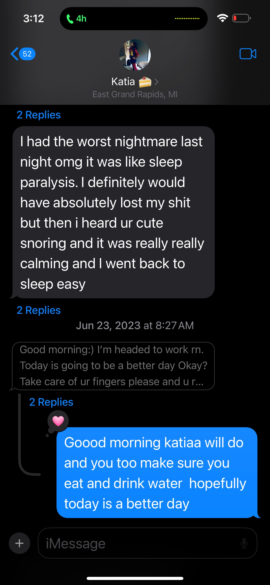

This is where it all really began
Where it all began was here. I found Dale, the love of my life.
It all started from online and two strangers in two different states on the complete opposite vibe.
But when love, fate, and Saif do their thing, it’s never impossible. I can never for sure say I knew this
was going to happen, but I know it was going to be the start of something amazing. From the first day,
we talked deep about each other’s lives, and I spent all night every night on FaceTime losing sleep over someone
who is worth not sleeping over, I knew the kind of person you were. You are the sweet girl who, from
the jump, shared all the amazing things you already have accomplished and the help you provided to others
through various different programs and even leading some. You’ve shown me that you are a person who pushes positivity
and strives to create a difference in a world filled with evil. You are the flower growing from the pavement.
Before what I saw what you looked like, your heart is really what attracted me first
I found my superhero SUPERKATIA
Now after we talked for a bit, we both started to realize that our schedules were busy with you, school,
and the programs and you going to coffee shops alone without your future boyfriend *eye roll*.
We knew that something was missing—the extra special energy booster. Check it
Something we never knew we needed until we did
You can never spell chismosa without Katia... YOU CAN'T
As soon as I hear these words, I grab my popcorn!
OKAY... QUICKLY OFF TRACK
This is where I got the idea for it from and I remembered it from this day which was June, 6th 2023 at 12 pm... okay okay let's get back on track!
There's a first time for everything...
I wasn't nervous but it was like sending that risky message and waiting on a response whether it's good or not.
And that's only me seeing you on FaceTime. I was like, BRO THIS GIRL IS GORGEOUS, she's mine—my soon-to-be best girlfriend ever.
Sometimes things don't go as planned and that's okay because it could lead to amazing things.
I sneaked my way in sleeping an extra night ;)
You were supposed to come to Chicago but your family somehow found out from your sisters "somehow" and plans got cancelled.
But in my mind, I thought you were just backtracking and didn't want to come again. Although on the phone you said you had an amazing time
in Chicago, especially all the good food we ate and the amazing burger we had. Then we went and sat at the Shedd for the last hour,
talking about life in front of two beautiful views. Hearing you talk was like hearing birds chirp—it was so peaceful and interesting.
I was gazing into your big, beautiful green eyes, and I was the happiest person. At that time, I didn't know there was any way to become happier with you,
but now I get to say we are super lucky for how things played out. Anyways, I had already made up my mind that I was coming to Michigan,
but when I asked you, I just wanted to make sure we were on the same page. :)
The first of many zoooom to kzoooo

The start of unforgettable road trips to see you in Kalamazoo!
When I found out I was driving to you I was so nervous I was actually super nervous but I packed my Cinnabon and hit the road.
The whole time I was thinking about how I could make you feel comfortable with me being in your house and how I wouldn't get touchy
so you wouldn't get nervous. I told myself I’d play along with you and not rush anything. So I got there, parked my car on the side,
and we sat down. The first thing we did was pop open the Cinnabon, and seeing you in your PJ clothes with little to no makeup,
just running around your kitchen nervous, was the cutest thing ever. We just sat there and started watching *Otto*.
I don’t know if you remember, but it was such a nice movie. We ended up getting some Thai food, and you paid, but I went in and
had her void your card so I could pay for it. It was so exciting, and we both had so much fun.
I don’t know if you remember, but the first time we cuddled was magical—we instantly connected and attached.
Then I told you exactly this: *"Damn, it’s 5 PM. I’m gonna have to start heading out—it’s gonna get dark."* But you wanted me to stay longer.
So I ended up saying, *"What if I just sleep here and leave in the morning?"* You were a little hesitant, so I let you decide,
and you ended up being down with it.
I’m sure we napped for a tiny bit. We woke up, went out, and grabbed Checkers fries and ice cream.
Then we played music and just sat there, literally talking about so many things while we were lying on your couch bed.
We were actually in a deep conversation looking at the ceiling. I also can’t forget you showing me the condos you had in the glass jar
or the list on the fridge that I thought was a tiny red flag—but it wasn’t yours.
Anyways, that was such a great day. It was so enjoyable, and we had so much fun together.
We sat there talking about our pasts, and that’s how we started connecting a little bit.
I told you my background, you told me yours, and we both didn’t judge. We sat there and lent an ear to each other, all cuddled up.
When I heard you say that I was so excited cause I felt the same exact way and I still do till this day lmfao.
It’s been magical since day one. Butterflies every single time.
Long distance is hard, but is it really when the love is real? I could never be more loyal and more loving towards something so far yet so close.
I mean, again, we did Jordan twice this time, and we still made it out stronger than ever.
I feel when you add two understanding people to the equation, it can never turn out wrong.
We just have to work together, communicate, and keep ourselves rolling. I will forever change my ways for you because I know you have done so before.
But I carry and have genuine love for you like you do not understand—everything about you makes me happy and cheers me up at all times.
Me and you will forever be against the problem, not me versus you, my love.
You are the most precious person God has sent my way. You do odd stuff sometimes, but those odd things are what make Katia, Katia.
So specific about stuff, especially when it comes to your apologies specifically, but again, these small little things I will tweak if you feel strongly towards something.
Not because I am a simp—like, mf I AM A SIMP—but not just because of that, but more so because with you I set my pride and ego aside to comfort
and have you accept me changing my ways to show how much I carry love for you. :)
AHHH SHIT ITS GETTING REAL
The start of something I thought that I was dreaamingg <3
AHHHHHHHH GOT MANS KICKING HIS FEET AND TWIRLING HIS HAIR AHAHAHAHAHAHAHAH
Right here I was like GOTCHA I have scooped up my baby
somethings never change...

I still wait every single weekend till we are able to hang out and cuddle and hug.
Again lets talk about long distance. as hard as it is sometimes especially knowing we are so far apart it also at the same time feels so good knowing
i have someone so close to my heart, a great person at that. If i ever get mad at you just know that at what ever the reason i still adore you i just cant
get mad at you its like your way to precious. my mind thinks about you all the time so my mind is always racing even in dreams i never want to escape and i dont because you are the dream.
my heart every beat that it does its engraved with your name, your like a super cold ice water on a summer day, or a cinnabon at the end of a super long week sitting next to your best other half.
I never knew what other half really meant or how it felt but now everything started to make sense. other half means on a bad day i have i can text you and you some how manage to cheer me up, even on a bad day for both of us i can always count on YOU, your hugs are tranquility your cuddles is peaceful sleep. we are a super power nothing can stop us:)
The moment I knew you were crazy or just in love lololol

Get ready for it for the REST OF YOUR LIFE NOTHING YOU CAN DO ABOUT IT NO TAKEBACKSIES
OH LOOK ITS POPEYE HERSELF THE STRONG MAYO GUZZLER POPEYE :)
AHA I CAUGHT YOU SLIPPING

YOU GOT CAUGHT SLIPPING MISS NT NT NT NOT GOOD NOT GOOD
This is the sign I have been looking for all my life
my gorgeous girl, I seen you broken down and I seen the happiest sides of you and the saddest sides I hold memories of you and us that no one will ever get to experience ifykyk and i have loved you through out them all more than i can ever love anyone on this earth. i love you when you tell me you love me even when you don't say it i even love you on your lowest of days where your sitting and dwelling and don't know what your going to do next, i love you when life itself hurts, so maybe that just makes every feeling we have together so special knowing i hold your hand and i know we can look up into the dark room or the dark night and understand that you have someone by your side that will forever love you cherish you take care of you care about you appreciate you and most importantly take this as a sign that you will always have a ear, shoulder, heart, home, best friend all in one once you came into my life. i love you so much I'll never know how to fully describe it when i think about you my heart beats at 200 heart attack mode lol. I want to hug and cuddle you until we are grey and oldies i absolutely love everything about you including all your flaws insecurities and all i genuinely don't think you can ever understand how precious and pretty you look in my eyes and the amount of care and love i carry for you i have the biggest blessing and the greatest person on my side. i am most vulnerable around you because i know that's the only place i can be that with out feeling judged or looked at as a " man " where i cant cry or hold in my emotions cause that's how i was raised from the youngest of ages. your not just a person you are the only person i want to wake up to and check my phone for, the person that can tell me a joke and make me laugh on my worst of days your the person id do everything for LITERALLY ANYTHING AND EVERYTHING YOU WANT MY NUTS CUT? DONE YOU WANT MY EYES? DONE MY ARM??? IM CUTTING IT OFF RIGHT NOW. literally anything just to see that smile, the feeling of the deeper the connection you feel even though i haven't known you for a while or that tighr knot in my chest every time i hug you its just a feeling of trust that i can be open to you about anything yes even if i WAS gay ALL I CAN DO EVERYDAY IS JUST THINK ABOUT YOU YOU COMPLETE ME BRO IM GLAD EVERYTHING THAT HAPPENED HAPPENED EVEN THE MOMENTS WHERE I COULDNT GET OUT OF BED AND I WAS DEPRESSED CAUSE IT ALL LED TO MEETING YOU and that's something i will always cherish for ever and i will always keep you in a locket in the front of my heart i love you katia i love YOU YOU its always going to be you its never gonna change and i will make sure of that my sweet sweet darling..